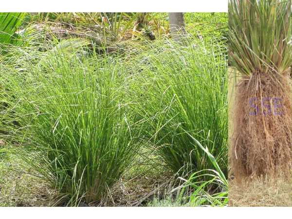

Chrysopogon zizanioides
Common Names: Vetiver, Cuscus Grass, Khus Grass
Local Name: வெட்டிவேர் (Tamil), Khus (Hindi)
Family: Poaceae
Origin: India
Plant Type: Perennial grass
Average Lifespan: Perennial; roots harvested after 12–18 months
| Growth Habit | Dense, clumping perennial grass; forms large tufts |
| Plant Size | 1–2 meters tall |
| Leaves | Long, narrow, stiff; bluish-green; aromatic when crushed |
| Flowers | Brownish-purple spikelets on branched panicles |
| Root System | Deep, spongy, aromatic roots; can reach 3–4 meters deep; excellent soil binder |
| Climate | Tropical to subtropical; tolerates extreme heat and drought |
| Temperature Range | 15–45°C |
| Soil Type | Adaptable to most soils; tolerates poor, acidic, and alkaline soils |
| Soil pH Preference | 4.0–8.0 |
| Sun Requirement | Full sun |
| Water Requirement | Low; highly drought-tolerant once established |
| Can it Grow in Pots? | Yes, in deep containers to accommodate long roots |
| Fertilizer Schedule | Minimal; occasional compost improves root yield |
| Common Pests | Very pest-resistant; aromatic roots deter soil pests |
| Propagation by Cuttings | Clump division; split and replant rooted slips during monsoon season |
| Water Usage | Very low; one of the most drought-tolerant grasses; used for soil and water conservation |
| Biodiversity Benefits | Prevents soil erosion; deep roots improve soil structure; used in watershed management |
| Anti-inflammatory Properties | Roots used for cooling the body, fever, and skin conditions; anti-inflammatory properties |
| Digestive Health | Root decoction used for digestive issues, urinary disorders, and as a cooling drink in summer |
| Anxiety & Sleep | Aromatic roots used in perfumery; vetiver essential oil used for stress relief and relaxation |
Disclaimer: Information provided is for educational purposes only and not a substitute for medical advice.
Add your field observations here.